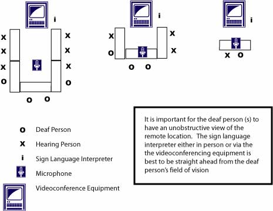

4.1 Introduction
Video communication or video conferencing is becoming a much more commonly used and effective means of interpersonal communication (Finn, Sellen & Wilbur, 1997) such as for distance learning, business meetings and social communication. As hardware becomes more available and less expensive, and software, signal processing and compression technologies become more stable and efficient, there is an increasing interest and experimentation with the technology by the general public and by business.
Video communication technology is designed to support real-time communication between one or more users when long distances separate them. Video-mediated communications, as well as other forms of remote interpersonal communication (e.g., traditional telephony, email, and audio-only communication) are distinctive by the nature of the medium from which they are constituted (Olson, Olson & Meader, 1997). Each form of communication has particular strengths and weaknesses. The goal in using a particular communication medium is not to replicate identically that which can be easily achieved when interlocutors are face-to-face. Rather, it is to find ways to provide participants with a means to achieve all the interactions that are necessary to complete the defined task in a productive and efficient manner. We need to understand the strengths and weaknesses of each medium of communication in order optimize its use and find ways in which to overcome their weaknesses.
One of the strengths of video conferencing technology is the opportunity it offers people with disabilities to communicate with each other, with service providers and with business associates without having to travel. One important benefit relates to sign language users, who can communicate in their own language (using their own cultural expressions and dynamics) with each other and with people who are hearing and at a distance.
ASL speakers living in remote communities can now have access to and participate in Deaf culture where Deaf cultural events are often limited to urban settings with a large population of ASL speakers. Other telecommunications technologies such as the telephone, TTY devices and synchronous chat use text and so do not allow sign language users to communicate in their first language. For people who use sign as their primary language, text based expressions of a spoken language like English should be a viewed as second language and as such is a significantly less expressive and intuitive language for sign language users. Through video communication technology, sign language users can now have access to a more equitable means of communication. Sign language users have been experimenting with video mediated communication for some time and many lessons have been learned to mitigate some difficulties encountered with video conferencing technologies.
In order to ensure that people with disabilities are adequately served by video conferencing technologies and remote meeting procedures we must ensure that the technology and procedures are inclusive and accessible. Guidelines that have been established for video conferencing situations may not be inclusive particularly for users who are deaf. Researchers at Gallaudet University have devised some guidelines to assist sign language users in experiencing more effective one-on-one video mediated signed communication (Williams, 2002) based on the findings and recommendations of the above research. However, these guidelines only apply in one-on-one situations with small field-of-view cameras; they have not been extrapolated to one-to-many situations with high end technology or where there is an interpretation need – a potentially common application.
While video conferencing technologies offer exciting opportunities to support people with disabilities, there is a dearth of research, case studies and best practice literature to support the procurement, installation, management and operation of inclusive video conferencing services. This report provides a set of guidelines and best practice statements that will assist organizations and individuals in establishing accessible video conferencing.
In this document, there is a focus on guidelines for users who are sign language users or who are hard of hearing. These two groups of people have the greatest variety of unique needs for video conferencing. Lack of accessibility therefore has the greatest impact on them. In this document, we provide an overview of the technology, a description of remote sign language interpretation issues and requirements, small case studies and user reports. Specific access issues are identified and discussed followed by guidelines and recommendations to address these issues. Many of these recommendations are based on our experiences since 2003 using high-end video conferencing for remote interpretation.
4.2 Technology Overview
Before addressing the unique aspects of video communication for people with disabilities, we will provide a brief review of common video communication technologies. There is a standard and common set of hardware technologies and configurations for video conferencing regardless of how the system is used and who the users may be. First, video conferencing relies on having network connectivity so that video and audio signals can be transmitted in real-time over a distance (often over long distances).
There are two main types of network transmission technologies used for video conferencing, Integrated Services Digital Network (ISDN) and Internet Protocols (IP). ISDN, introduced in 1984, is designed to allow fast digital point-to-point connections over the public telephone network (Total Access Networks, 2004). Video communication signal processing and transmission are guided by the International Telecommunication’s Union (ITU) H.320 video standards (Polycom, 2001). Guaranteed and consistent quality of service is provided by ISDN as the signal does not fluctuate with network availability because it is a continuous feed and direct connection. Common transmission speeds for ISDN used in video conferencing applications range from 128 kilobits per second (kbps) to 384 kbps. These transmission speeds allow audio-video signals to be consistently transmitted at near broadcast quality (broadcast quality video transmission is 29.95 frames per second (fps)). The cost of this service is based on a monthly line charge (e.g., for 128 kbps service, two 64 kbps lines are required) plus “on air” charges per minute. Video conferencing is “on-air” as soon as a connection is made and is only disconnected when the video conference is complete.
IP videoconferencing involves using Internet Protocols and technologies to process and transmit live video and audio signals. Video conferencing using IP protocols is governed by the ITU H.323 video standard (Polycom, 2001).
Internet protocols (IP) require that data signals are divided into small data packets and routed through various available networks rather than through the continuous feed, direct point-to-point connection available with ISDN. The IP video conferencing signals must share the network with all of the other Internet traffic resulting in inconsistent and fluctuating quality of the video and audio signals (ranging from 2 to 29.95 fps). As a result, high-speed Internet connectivity is required to have effective IP-based video conferencing. Much research and development effort has been placed in developing technical solutions for improving the quality of service for IP video conferencing. Some of this research that has met with some success includes better compression and signal processing techniques (Muresan, et al., 2002), and ways of assigning transmission priorities to video and audio signals (Babich & Vitez, 2000).
Gatekeeper technology is a network device that provides addressing service for H.323 (Internet-based) videoconference clients. It may also be configured to impose network bandwidth restrictions and to allow or disallow a call. Registration by the videoconference client usually takes place when the client is started; the address of the gatekeeper is put into the client's configuration. Use of a gatekeeper allows a videoconference device to "dial" another device using the videoconference address rather than an IP address (which could be changed by DHCP). Gatekeeper services might include bandwidth and call management. Bandwidth controls the number of H.323 terminals permitted simultaneous access to a LAN. Call Management maintains a list of active H.323 calls. This information indicates when a called terminal is busy, and provides information for the bandwidth management function. One or more gatekeepers may reside anywhere on the network, fully integrated into another networking device or operating as a standalone software application on a desktop computer.
Costs for IP-based video conferencing can be significantly lower than ISDN and are mostly related to the speed or bandwidth of connectivity rather than the length of time the video conference is in session. Cable modem or Digital Subscriber Line (DSL) connectivity is generally available and relatively inexpensive, and would be considered as the minimum bandwidth required. Similar to ISDN cost structure, the cost of this service is also based on a monthly rate plus “on-air” per minute charge for use. However, these costs are considerably less than ISDN because of the shared nature of IP-based networks. High-speed networks, and/or fibre-based Ethernets only improve the quality and reliability of video conferencing but costs are significantly increased.
A multipoint videoconference allows more than one site to connect at the same time. A multipoint videoconference involving 3 or more sites is possible through the use of a bridge or multipoint control unit (MCU). Some pre-configured systems such as the Polycom FX have built-in bridges which allow you to connect to multiple sites. Third party services such as Bell Canada bridge services can be rented on an hourly basis.
The video communication system itself consists of two subsystems, one at each end of the network connection. Each subsystem is composed of at least one video camera with optional zoom controls, microphones (desktop or wireless), speakers, a small preview screen (picture-in-picture capability), and monitors or large screen televisions. These subsystems can be PC-based such as iVisit and Netmeeting setups or can be dedicated hardware such as a PolyCom™ ViaVideo® II. Many sources are available to describe the characteristics of the various hardware/software options (e.g., Video Development Initiative’s Video Conferencing Cookbook, (VIDe, 2004) is a good source for general detailed information about video conferencing hardware).
There are many different types of subsystem hardware that range in quality and cost. The simplest and least costly hardware is a webcam (at $50.00) and PC-microphone. Often this type of hardware is “plug and play” technology that is directly accepted by the computer. As a result this type of setup can be installed directly and used immediately with software such as NetMeeting or iVisit. However, this type of hardware has few controls and adjustments. For example, a simple webcam may be limited to focus control (there are not lighting, motion or zoom controls).
The audio system for video conferencing consists of some combination of audio headset, telephone handset, microphones, speakers, and digitising devices (hardware and software). One of the most traditional microphones in video conferencing is the lavaliere microphone, which is a miniature microphone that you clip onto the clothing of the person speaking. Wearing a lavaliere microphone reduces the feedback noise that is picked up by the other type of microphones. A second common type of microphone is the room microphone, which is a unidirectional boundary microphone. These microphones lie on the surface of a conference table or desk. They detect speech with a clear, natural sound. This type of microphone is specially designed to filter out room acoustics – much more so than a conventional microphone on a desk stand. A third microphone type that is often used with desktop video conferencing is the stick microphone or microphone built into the camera. Such microphones lack good audio quality and can effectively shut down a video conferencing. These types of microphones are the least expensive audio solutions but they are also the lowest quality. There is no adjustment in the echo or gain features for these microphones.
As the quality of the camera and microphone setup increases there is a corresponding increase in functionality, controls and the cost of the hardware. For example, a top of the line camera may cost $2,500 but will have a considerable number of functions such as zoom, pan and tilt controls, back light, and automatic tracking. In addition, the optics system in these types of cameras is of a much higher quality than typical webcams. These types of cameras are typically used with systems that allow remote control of camera functions so that the remote participant can control the zoom, pan and tilt functions of the remote camera.
4.2.1 Connecting IP technologies with ISDN
IP video conferencing systems and ISDN systems can be connected together using a gateway communication system. A gateway offers the most flexible link between ISDN (H.320) and IP (H.323) videoconferencing standards and delivers full interoperability between ISDN and IP endpoints. The Gateway integrates seamlessly to provide H.323 management and to control network capacity. For instance, you can conduct conference calls seamlessly from any endpoint to any other endpoint – regardless of system type or network configuration.
4.2.2 Bandwidth recommendations
Videoconferencing requires a large amount of data to be transmitted in a short amount of time. The recommended minimum amount of bandwidth is 384kbps for a typical business quality videoconference.
The main consideration for any video conference is how many frames per second are being transmitted. A good quality video conference requires 30 frames per second video transmission.
Any data rate higher than or equal to 384 kbps will support a video screen update of 30 frames per second, equivalent to VCR playback quality television.
Any data rate lower than 384 kbps will support a video screen update of 15 frames per second or less, which is still usable, but will appear slightly jerky under rapid motion.
4.2.3 Applications
A typical video conferencing interface is based on a telephone metaphor where remote participants are connected using telephone or telephone-like (IP address) numbers. Terminology such as dialing, hanging up, answer, busy, and address book is used to refer to the connecting tasks accomplished by users with the system. Unique aspects of the interface include video displays (local and remote windows) where the local window often appears as a picture-in-picture window in the main video window. Settings menus are often available to customise the look and placement of the video windows, and to adjust various technical properties such as compression quality or levels, video and audio settings and controls, and file management. On the high-end video conference interfaces there are also specialized camera settings for remote and local camera controls and automatic speaker detection.
Video conferencing can involve more than just the real-time transmission of audio and video images. Applications such as file and application sharing, logging audio and video, capturing and sending of static images, simultaneous text chat can be incorporated into video conferencing software. While all of these applications can be very useful in supporting work group needs, they can also interfere with communication strategies. In addition, appropriate access to all of these applications must be included for people with disabilities.
4.2.4 Physical space/Room technologies
Although the number of hardware providers of high end video conferencing equipment is relatively small and system configurations are limited, it is important to carry out a needs and task analysis, (i.e. what is the purpose of the video conferencing system in the organization and for what tasks will it be used) and an environmental survey. These surveys are useful in determining the system requirements, the human resources required to manage the system and an appropriate room or room modifications that might be required. The results of these analyses will have cost, management and timeline implications. For example, if lighting renovations are required the project budget will increase.
4.2.5 Environmental Considerations
In order to have effective video communication, the hardware must be properly configured and housed in an appropriate environment. There are numerous technical guidelines published to assist organizations and individuals in proper environmental assessments and setup for various configurations of video conferencing hardware (see Polycom, 2004; McAteer, 2000; and Brightline, 2002 to name a few) but few of these guidelines address the special considerations required to accommodate people with special needs, particularly sign language users and remote interpreters.
4.2.6 Future Considerations
Some industry pundits (Lee, T., 200X) suggest that instant messaging and mobile cell phone technologies will assist in the acceptance of personal video conferencing. Already, cell phones incorporate instant messaging capability with image processing and video capabilities. As the next generation enters the workforce they will already be exposed and using instant messaging and video conferencing., “These kids are ready for video conferencing because they were brought up in front of cameras their whole life.” (Brandofino, M. Glowpoint Inc. page #.)
4.3 Technology issues related to accessibility
Video conferencing technology mostly involves audio and video communication mediated through computing and network systems. There is some, although considerable less, interaction with computer software required to carry out a video conference. Accessibility by people with disabilities involves access to communication. For people who have no communication disabilities, video conferencing remains accessible. For example, for people who are blind or have low vision, the video conference becomes an audio-only conference. All of the standard audio conference issues such as, ensuring software applications are accessible to screenreaders, and the need to have visual materials made available prior to the conference and readable by a person who is blind are relevant here. However, none of these issues is unique to video conferencing and guidelines for inclusive audio conferencing, and access to images and other visual materials are available from other sources. An example of web guidelines are the Web Accessibility Guidelines of the W3C, (W3C, 2004).
For people who are keyboard users, there are also very few issues related to video conferencing applications that are different from other software applications. One unique issue is the accessibility of camera controls and pre-set buttons. These controls are often available through a remote control or button panels and/or software buttons. Remote control settings may need to loaded into specialized assistive technologies such as an environmental control unit in order to this person to access the camera controls. Where controls are provided through software, keyboard access is required to allow use of these controls.
The people with the highest need for access solutions to video conferencing then are people who are deaf or hard of hearing and who are non-speaking. The remainder of this report will focus on access issues and guidelines to ensure that there is access to audio and video communication for people who are deaf or hard of hearing.
4.3.1 Video conferencing and use with sign language interpreters for people who are deaf.
One exciting opportunity offered by video conferencing technology is that of supporting people who are sign language users in accessing sign language interpreter services; services that can be particularly difficult to obtain in geographically remote locations. Sign language interpretation is required to mediate communication between deaf and hearing people. When sign language users are in geographically remote locations, it is now feasible for them to have access to interpreter services using video mediated communication technologies. However, there are important considerations and differences to address. In this section, we discuss the unique issues that arise when remote interpretation is required and provide amendments to technical and use guidelines to account for these special needs. These recommendations are based on our experiences since 2003 using high-end video conferencing for remote interpretation.
We will also provide a brief introduction to sign language interpretation and video remote interpreting as a sub-specialty within sign language interpreting.
4.3.1.1 Sign Language Interpretation
Sign language interpretation is required when people who are deaf must interact with people who are hearing such as in business meetings, for court, and for accessing social and medical services. It is essential for providing equal access to these activities and services for people who are deaf, and in many western countries it is required through legislative initiatives (for example, see the Americans with Disabilities Act, US Department of Justice, 2003).
American Sign Language (ASL) is the most prevalent sign language used in North America although it is not the only one (e.g., in Quebec, Canada Langue des Signes Québécoise is used). ASL, like other sign languages, is a visual-spatial language without much grammatical similarity to English (Stokeo, 2001). It is considered a linguistically complete, natural language system where the elements of the language are not equivalent to vowels and consonants of written languages, and it is not a translation of English. Vocabulary and meaning of concepts in ASL are expressed using a series of hand gestures, facial gestures such as eyebrow motion and lip-mouth movements, and body movements that change in time and space. This series of gestures cannot easily be represented by a single written or spoken word. Fingerspelling is used to spell out a word in alphabetic characters that has no sign. For example, there is no unique sign for email and it is therefore represented as the hand gestures for an “e”, an “m”, an “a”, an “i” and an “l” separately.
In order for communication with hearing people to be effective in any situation, the person who is deaf must be able to completely express herself, and must also have complete access to the meeting and communication activities. Interpreters are required to provide a translation of what is said as well as broker any linguistic clarification required and cultural differences experienced between the two parties (Avery, 2001). In face-to-face situations with inexperienced participants, communication can be awkward and difficult. Common practices of turn-taking, participation, maintaining a common understanding and access are noticeably different from meetings that occur between all hearing participants or all sign language participants. For example, common cues to indicate a speaker is ready to relinquish the floor to another speaker are different between hearing and sign language users.
Hearing people use a variety of verbal and non-verbal signals such as eye gaze, asking a question of another person, and head turns to manage turn-taking (Preece et al., 2002) in a group environment. All of these signals are very subtle and learned and participants are generally unaware of when, where, how and the speed with which such tactics are used. Sign language users tend to use more obvious hand gestures such as pointing, and waving their hands to gain attention and fewer non-verbal cues.
In an interpreted setting, the flow of communication tends to be slower due to the translation process. In addition, the sign language user’s visual attention is with the interpreter and not with others in the meeting. As such, they cannot attend to subtle turn-taking gestures, such as shifts in eye gaze employed by hearing individuals, in order to know that the speaking floor is available. Turn-taking must therefore be slowed down and made more obvious or formal so that sign language users have a chance to keep up and participate.
Other difficulties that arise in meetings between deaf and hearing participants include difficulties maintaining a common level of understanding because of the use of two different languages to discuss common subjects, and difficulties with access to private or “whispered” conversations. These types of difficulties are not that different from those experienced during meetings between participants using two different spoken languages. However, the role of the interpreter can be very different. The sign language interpreter often must interject cultural and emotional interpretations, request clarification, and interrupt the meeting flow to allow the deaf person a chance to speak.
The role of the meeting chair in these kinds of interpreted settings is very important as management of the meeting is ultimately his responsibility. The meeting chair must be aware of the differences and needs of all meeting participants and take extra steps to ensure that all participants are included and involved.
4.3.1.2 Video remote interpreting
Video remote interpreting in general is identified by interpreting service providers as an enhancement to the existing service and requires specialised training and different terms of use. For example, the Association of International Conference Interpreters suggests that spoken language remote interpreters should only work for three hours per day and that video interpreting is significantly more fatiguing over a 30-minute turn than conventional face-to-face interpreting (Moser-Mercer, 2003). These restrictions and issues apply to sign language video remote interpreters and will likely be amplified because of the physical nature of sign languages.
Video remote interpreting is considered a specialization within the sign language interpreting field. It is defined as the use of video conferencing technology to provide interpreter services where a participant or the sign language interpreter is located at a geographically different location. Many of the difficulties evident in face-to-face meetings are amplified for video remote interpreting and new ones arise that reflect the weaknesses of video conferencing in general.
There are numerous organizations throughout the world that provide video remote interpreting services (My Video Interpreter, 2004; SignTalk, 2004; and Community Access Network, 2004 are three examples) but there is no standardized training protocol or guidelines to overcome some of the difficulties. In addition, there are few best practice examples that demonstrate ways to use the strengths of the technology and overcome some of the weaknesses.
4.3.1.3 Challenges of Video Remote Interpreting
Many challenges arise when video remote interpreting is employed. Some of these challenges relate directly to the quality of the camera hardware and the bandwidth of the video conferencing system. For example, remote interpreters must consciously adjust their natural signing space to accommodate the camera’s field of view. They cannot sign outside of the area captured by the camera. Many high-end cameras have zoom controls that can adjust this field of view by zooming the lens either wider or closer. However, a wider field of view that shows more of an interpreter’s natural signing space also captures more of the background and surrounding scenery that can be distracting for the person who is deaf. Inexpensive webcams do not have an adjustable field of view and sign language users often must move farther away from the camera so that more of their signing space can be seen or they must restrict their signing to the area around their faces.
Fingerspelling tends to be very fast-paced and not well articulated in face-to-face situations. Only a very high bandwidth video conferencing system will not become pixilated and be effective for fast fingerspelling. Fingerspelling therefore must be slowed down and done closer to the interpreter’s body. However, when fingerspelling slows down so does the rate of communication between deaf and hearing interlocutors. There is thus a significant impact on the potential for misunderstandings and for missed opportunities to turn take.
One important aspect of hardware technologies that has a large impact on the success of sign language use is the camera view angle or field of view. This is defined as the viewable area or scene that can be seen through the camera (Segal, 2004) and it is a function of the focal length of the camera lens. For example, a wide angle lens with a short focal length has a very large field of view or area of the scene that can be seen through the camera lens. Zooming in the camera increases the focal length and decreases the field of view to a much smaller area of the scene.
Remote interpreting removes the chance to develop rapport with consumers, and for that reason has been met with some resistance on the part of sign language interpreters.
4.3.1.4 Considerations for video remote interpreting
With video remote interpreting there can be three possible interpreter locations:
- The interpreter is remote from both parties (hearing person and deaf person physically located together);
- The interpreter is physically located with the person who is deaf and the hearing participant(s) are remote; or
- The interpreter is physically located with the hearing participant(s) and the person is deaf is remote.
Each scenario requires unique considerations regarding the behaviour and perception of the interpreter/deaf person pair. However, regardless of scenarios, one aspect remains constant; the interpreter and deaf person must have constant eye contact and must be able to see each other’s signs at all times. A breach of eye contact indicates that communication has been severed.
Video conferencing technology is designed to support communication between one or more remote users.
Eye contact/gaze
Chen et al (2003) have suggested that eye contact is very important in communication of any kind. They indicate that when a speaker is looking to the left, right or upward, the recipient believes that the message is not meant for him. If the eye gaze is slightly downward, although not preferable, the recipient believes that the communication is intended for them. This could explain why television newscasters read from a teleprompter that is positioned slightly below the front view camera. Although the newscaster’s gaze is slightly downward, viewers still believe that the newscaster is speaking directly to them and that the message is meant for them. The same is true in video-mediated communication.
Cameras are usually positioned above the main viewing screen (the screen that shows the video images of the remote interlocutors) meaning that eye gaze is slightly downward (people are looking at the viewing screen and not the camera). However, large viewing screens or small field of view cameras create a large gap between the camera and the positions of a person’s gaze (while they are looking at the viewing screen). It appears that a person’s gaze is significantly downwards (not slightly downwards) and can be very disconcerting particularly if the interpreter is remote from the person who is deaf. When the interpreter is remote the deaf person has no other connection or means of communication with the interpreter other than through the video conferencing system. Maintaining eye contact (even artificially) is crucial for deaf people using video conferencing in this situation.
The interpreter can adjust their position to the camera by sitting far enough back from the camera or zooming the camera out so as to appear to be having eye contact with the person who is deaf. However, doing so also increases the amount of background scenery that the person who is deaf must contend with and screen out particularly with low level or even lighting conditions. Spot lighting can be used to emphasize the interpreter and de-emphasize the scenery but this must be carefully planned and orchestrated; something that is not normally part of a video conference setup.
When the person who is deaf is physically located with the interpreter, maintaining eye contact between the interpreter and the person who is deaf is relatively straight forward. The interpreter can sit next to the video display so that the person who is deaf is always looking toward the monitor. However, the person who is deaf may still appear to the remote participants as though she is looking in another direction and may be disregarded by the other interlocutors because it seems as though she is not participating due to the mis-interpreted eye gaze cue. In addition, the interpreter cannot see the remote participants and may miss the non-verbal cues for turn-taking and other important meeting activities.
In face-to-face situations, interpreters know that if they make eye contact with the hearing speaker, the speaker assumes he is talking to the interpreter and loses his connection with the deaf participant. It is an automatic human behaviour that people tend to look at the person who is speaking (verbally) and thus make eye contact. Experienced interpreters usually avoid eye contact with the hearing person as a non-verbal reminder to that person that he should direct his remarks to the deaf person. Remote interpreting can interfere with this practice particularly when the person who is deaf is remote from the interpreter (interpreter is physically present with the hearing participants or remote to all participants).
When the interpreter is remote to all parties, the interpreter must look at the viewing screen to watch the person who is deaf. To all parties this seems as though the remote interpreter is now looking more directly at them and the viewing screen (and hence the interpreter) becomes the centre of unwanted focus. In addition, the opportunity for the interpreter to use eye gaze as a non-verbal cue to indicate that hearing participants should relate to the person who is deaf is considerably reduced. Careful attention to seating plans is one way to alleviate some of these difficulties.
Seating
In a video conferencing setting, seating should always be an important consideration because the remote participant has considerably less presence and prominence than those at the local site. For remote interpreting situations much more thought must be given to the position of each participant, and whether the interpreter is sitting or standing (community interpreters may be more accustomed to standing while interpreting and thus may prefer to stand. However, in general it is preferable for the interpreter to be seated). Having tools such as notepads or laptops can also be useful for tracking what is being said or presented. Table 2 shows the suggested seating arrangements for the three different interpreter locations. Note for all situations, flowers, water bottles, computer screens and other items generally located on tables should be removed to reduce the visual clutter in the camera’s field of view.
| Location | Seating for deaf person | Seating for hearing person(s) | Seating for interpreter |
| Hearing person and deaf person at same site, interpreter is remote | Seated across from viewing screen showing interpreter and in front of camera. | Beside viewing screen so deaf person can see interpreter and hearing person(s) together. | In front of own viewing screen and camera. Will be able to see deaf person. |
| Hearing person and interpreter at same site, deaf person is remote. | Seated in front of own viewing screen and camera. | Beside interpreter so deaf person can see both parties. Interpreter should direct eye gaze towards deaf person at all times (while signing and voicing) | In front of viewing screen and camera. |
| Deaf person and interpreter at same site, hearing person is remote | Seated in front of own viewing screen and camera. | In front of own viewing screen and camera. | Beside viewing screen and visible to deaf person. May not be visible to hearing person. |
| All people are remote | Seated in front of own viewing screen and camera. | In front of own viewing screen and camera | In front of own viewing screen and camera |
Table 2: Suggested seating arrangements for all participants.
Environmental and technical issues
There are environmental and technical solutions that can be optimised for people using sign language. When identifying the location(s) for video conferencing, considerations such as physical environment (e.g. room size, lighting, acoustics room setup and furniture) and uses of video conferencing in that environment are important to optimise and renovate if needed. Table 2 summarises some of the important technology considerations when hearing and deaf people are participating in a video conferencing together.
Technical or equipment solutions are also possible and in combination with environmental adjustments can greatly assist in optimising a video conference for people who are deaf and using interpretation. For example, video transmission frame rate of greater than 15 frames per second is critical. Having consistent, high quality image transmission rates available through dedicated high bandwidth networks such as ISDN or high speed IP-based networks can provide this.
When using video conferencing with people who are deaf, audio is less important (although it is still relatively important for the interpreter), and the need for camera controls (remote and local) becomes more important. A personal microphone such as a lavaliere or lapel microphone for the interpreter rather than a high-end room microphone can be used. In the situation where the interpreter is with the hearing participants a room microphone and a personal microphone may be required. This also means that intelligent audio signal processing (in the form of an intelligent hardware or software mixer) must be available to switch between the various audio sources (e.g., interpreter voicing and meeting participants).
| Technology | Hearing People | Deaf People |
| Audio |
|
|
| Video |
|
|
| Placement of the microphone |
|
|
| Lighting and Background |
www.effectivemeetings.com
|
|
| The View of the Room |
|
|
Table 3: Summary of technology considerations for video conferences involved hearing and deaf participants.
The environment must have minimal “visual noise” such as windows, wall coverings, as any thing or person that moves that will distract users. These types of visual distractions can disrupt the whole flow of communication in a video communication session that includes people who are deaf. Camera controls such as zoom can be used to adjust the image to eliminate some of these distractions. However, adjusting the image may not be appropriate in all situations (e.g., in a many-to-many conference where the remote participant needs to see all of other participants). Cameras with controls tend to be more expensive, high end cameras.
Detailed Examples of Visual Noise
- Windows can cause significant visual noise. Outside activities seen through the window can be distracting, and lighting from windows can cause difficulties for cameras that automatically adjust for lighting conditions. Cameras pointed at users sitting in front of windows will be flooded with background light and the transmitted image of the user will appear only as a dark object in front of a well-lit window.
- Window coverings such as curtains that sway, or those that do not completely cover the window can be distracting.
- Objects typically found on tabletops during meetings, like water bottles, and laptops can also contribute to visual noise.
- Tables with highly glossed surfaces cause light to reflect off the table and into the camera. Cameras that automatically adjust brightness settings will then adjust for the camera to accommodate this reflected light and most other images in the surroundings, including the people will appear dark.
Other physical factors to consider
Tables: Tables with a matte finish are recommended in order to reduce additional glare. Depending on the size of the sessions, tables should be portable (eg: wheels on legs, or detachable legs) to allow optimal set up. A large meeting could be accommodated by a series of tables and technologies set up as shown in Figure 21.
Objects on Table: Minimize the amount of items visible on the table. Flowers, water bottles, computers and other objects disrupt the field of vision and should be placed elsewhere.
Curtains: Solid curtains are recommended to allow the least amount of visual distraction. Vertical shades, however, are not recommended, as they allow sunlight into the room and cause difficulties for cameras with automatic brightness compensation.
Lights: Adequate room lighting ensures productive communication. The
most optimal lighting is one that illuminates the users face and hands directly.
However, this type of lighting is likely to cause discomfort to the user.
Also, bright overhead lighting minimizes shadows on the face and hands. Brightline
Inc. (Brightline, 2002) provides recommendations and shows optimal lighting
arrangements for video conferencing. Lighting and lighting placement are a
function of room size, person location, wall and ceiling reflectance.
Chairs: The chairs should not be “squeaky” when rocked back and forth. Casters on casters are most appropriate for tiled floors to prevent scraping sounds when the chairs are moved. The ideal floor covering is carpet with under padding to minimize the chair moving sounds.
Room Colour: The walls in the video conferencing room should be painted a solid neutral colour (blue and greens are also acceptable). Walls with patterns or pictures are visually distracting.

Figure 21: Different furniture and placement configurations.
Turn-taking
Another critically important consideration is that of turn-taking. Because of the difficulties in producing and understanding non-verbal cues during any video conference, turn taking becomes much more cumbersome in general. Interlocutors constantly miss turn-taking cues resulting in communication errors such as overlapping each other or interrupting, having long moments of silence, and taking control of the floor for lengthy periods of time. When someone who is deaf is added to the video conference these difficulties and errors become elevated.
It is often the role of the interpreter to mitigate turn-taking but it may be a much more difficult task for a remote interpreter because they too may miss the turn-taking cues. At the Canadian Hearing Society, attempts to solve this particular difficulty involve employing a conference manager at one site. This person is not the meeting chairperson and is only responsible for managing all of the technology as well as maintaining a formal speaker’s list (by monitoring people’s desire to speak). This approach is the most successful approach to date but it not the most cost-effective method because it requires another person to facilitate the meeting.
Fels et al. (2000) investigated the use of technology such as lights (flashing, spinning, etc), and a waving hand as a way of improving turn-taking for video conferencing. They found that having a waving hand mechanism activated by a remote participant was very successful at gaining the attention of all participants. While this may be appropriate for classroom settings or even meeting settings, a waving hand may not be acceptable or appropriate in all situations. Further study of this type of approach may provide acceptable solutions.
A third solution to this problem is to use an electronic token to request a turn to speak. This is similar to a physical meeting token or formal speaker list that is commonly used to formalize turn-taking in face-to-face meetings. A user would request the token indicating that she wants a turn to speak, have her turn and then release the token when finished. There must be an override mechanism, perhaps controlled by the meeting chairperson, so that a person does not take complete control of the meeting or the floor. The electronic token can keep circulating until the communication session is complete. There has been little research on the effectiveness of this approach to formalised turn-taking and the acceptance by hearing and deaf people of such a method for video conferenced meetings.
Confidentiality
There are important and unique confidentiality and ownership issues arise with video conferencing. For example, questions such as whether recording a video conference violates confidentiality rules, who owns the archive, and who can access the archive remain unanswered. Similar to audio recording practices, permission to record the audio/visual proceedings should always be sought from participants. This permission should address the ownership and access issues. Legal advice is warranted if archiving video conferences is a normal procedure for an organisation.
Special Considerations for managing multipoint or multi-application conferencing
The user will have the opportunity to connect such equipment as a document projector and/or a scan converter that allow people to present paper-based visual materials through the video conferencing.
Video conferencing equipment such as Polycom allows the user to switch between different presentation technologies while in session. For example, the user can switch and allow the users at the remote locations to see a PowerPoint presentation or videotape on the full screen while presenting. For the hearing presenter/participant, there are no barriers as the hearing presenter can continue to speak and the users can see the PowerPoint presentation simultaneously. For deaf users deaf or hard of hearing users must read the PowerPoint presentation first and then return to the presenter or the interpreter being on the screen. This can cause disruptions (and hence delays) in the flow of the presentation and requires considerable mental effort on the part of the deaf participant who must then remember what was on the visual display.
The presenter should be aware of the difficulties of presenting additional visual materials simultaneously with discussion and provide visual materials to participants before the video conferencing or prepare the presentation to account for participant’s needs to keep switching the view screen between the visual material and the interpreter or speaker. For example, the presenter should constantly repeat verbally points on visual material being discussed or allow time for participants to take notes or copy the material on the slides.
Displaying a PowerPoint presentation on the same image as the presenter is worse because it can be very difficult for the users at the remote locations to see the PowerPoint presentation (it is usually too small or the projection screen in the local location is poorly lit).
Other factors
The need to constantly monitor the auditory “goings-on” of the physical environment and then decide what is important to communicate to the person who is deaf is an important secondary task for the interpreter. For example, an interpreter might ignore a pencil that falls on the ground because it does not have any consequence for the communication transaction in a face-to-face meeting. However, when the interpreter is remote the physical context is limited by what can be viewed though the camera. It is difficult for the interpreter to determine whether an unseen audio event such as a door shutting outside the view of the camera is important or not. The interpreter must be hyper-vigilant and constantly assess the importance of non-speech and unseen audio events increasing the already high cognitive load and corresponding fatigue levels for the interpreter. Frequent breaks (e.g., every 30 minutes) or more than one interpreter may be required to accommodate these increased cognitive demands.
One final consideration for video conferencing situations is that they can include multiple applications. Many video conferencing technologies allow you to incorporate presentations (e.g. PowerPoint, videotapes (VCR, DVD), a drawing application to share work among all participants and other visual mediums) If only one viewing screen is available, the video conferencing software allocates the viewing priority to the application. The hearing participants can talk over the display and hear what is being said. However, in situations where the interpreter is located with the hearing participants or remote from all participants, the deaf person cannot participate because the interpreter’s video is replaced by the application images. In this situation, the use of two viewing screens, one dedicated to the interpreter and the second one for other images is required, or the shared work must be paper-based. Users might have the opportunity to connect such equipment as “Elmo” and or a scan converter to allow user to use different technologies through the videoconferencing to provide more visual information.
Videoconferencing equipment such as that available through Polycom allows the user to switch between the mediums while a session is happening. For example, the user can switch and allow the users at the remote locations to see a PowerPoint presentation or videotape on the full screen while presenting. For the hearing presenter, this results in no barriers as the hearing presenter can continue to speak and the users can see the PowerPoint presentation. For the deaf users it requires more time as the presenter must allow the deaf or hard of hearing users to read the PowerPoint presentation and then go back to the presenter or the interpreter being on the screen. Using a PowerPoint presentation with the presenter through the videoconferencing camera results in less than optimal viewing because it is very difficult for the users at the remote locations to see the PowerPoint presentation. Ultimately the ideal setting would be allowing sufficient viewing times between the mediums to allow the users to read the content. Ideally it would be an excellent idea to send copies of your presentation (e.g. PowerPoint) to the remote users and interpreters. Table 3 summarises the most common behavioural, etiquette and communication issues experienced by hearing and deaf people during video conference sessions.
| Issue | Hearing People | Deaf People |
| Language choice of meetings and issues of language power |
|
|
| Introductions |
|
|
| Eye Contact |
|
|
| (deaf or hearing) |
|
|
| Use of peripherals |
|
|
Table 4: Behavioural, communication and etiquette issues.
4.3.1.5 Considerations for Remote Sign Language Interpreters
Preparation
An interpreter with many years of interpreting experience will be reasonably comfortable in most interpreting settings. However, the addition of remote interpreting makes every interpreting situation potentially new and anxiety provoking.
Some of the concerns that interpreters will have include:
- Interpreters want assurances that the people at the remote site will understand their needs and be able to meet them.
- Whether remote interpreting equipment will be placed in the correct position.
- Whether people at the remote site will be familiar with how to use an interpreter and the particular dynamics of using a visual interpreter remotely?
To ease some of these concerns, remote interpreters require as much information as possible prior to the interpreting event. Information about the participants, the meeting purpose, agenda items for discussion, intended outcomes of the assignment, and any presentation materials should be provided at least one day ahead of the scheduled video conference.
During the video conference
If deaf people are meeting an interpreter face-to-face for the first time, they tend to ask personal questions such as whether the interpreter’s parents are deaf, or where and why they learned sign language to establish a rapport with the interpreter. A remote interpreter may not have this same opportunity to interact with the deaf consumers before the interpreting session, and may be unable to develop that important rapport with those deaf consumers.
In addition, there can be regional differences in sign language that may cause communication difficulties or misunderstandings. For example, a Canadian deaf person may be assigned an American remote interpreter who will use subtle differences in sign language vocabulary. The may cause difficulties for the deaf person in understanding what is being said or expressing herself clearly. It is important to schedule introductory time between the remote interpreter and a deaf consumer ahead of the meeting (at least 10 minutes) to allow these individuals to establish some rapport, and acknowledge and accommodate for regional differences.
The interpreter’s role is to facilitate communication between the hearing and deaf participants. During the session, the interpreter might ask for the participants to clarify what is being said because he/she did not hear the content or under the meaning of the content being said.
Processing in public
While the interpreter is voicing for the deaf consumer in a face-to-face situation, it is assumed that the other participants are focused on the deaf speaker and the hearing people are only listening to the interpreter. In a video conference the remote interpreting may be the centre of attention because the remote interpreter is seen on the viewing screen. The interpreter must perform the complex cognitive task of interpreting while being in the unusual position of being the centre of attention. This potentially adds discomfort and cognitive load to the already considerable cognitive load from interpreting for a remote sign language interpreter.
Lag Time
During any interpreting assignment there is a lag, or delay, from the time the source message from the deaf participant is presented, to when the interpreter understands the message and presents it in the target language. This lag may be longer when videoconferencing technology is used due to the delay introduced by the technology. The ability of the deaf participant to participate on an equal level is restricted. Participants need to know to expect these delays and account for them meetings. Section 3.4.1.6 provides some suggested solutions to assist in managing the turn-taking difficulties imposed by the increased lag time. In addition, we suggest that a set of guidelines should be presented to all participants before the conference begins in order to educate people on the communication differences and the procedures put in place to accommodate these differences. The meeting chair or the access manager should be responsible for disseminating these guidelines.
Interpreters, deaf people and hearing people at several sites
Where there are several deaf people and interpreters for one video conference, the arrangement of cameras, viewing screens and seating becomes more complex. If several deaf people are participating in a multi-point call, they may have interpreters present with them at their site. In that case, the interpreter at that site voices and the information is re-signed by the interpreter at the other sites. The deaf people then have the choice of watching the deaf participant directly, or watching the “shadowed” version provided by the interpreter in person at their site. In a multi-point or continuous presence call, the frame speed of each square is reduced enough so as to increase the difficulty of the interpreting task. Having deaf people provide an interpreter at their site reduces some of this difficulty.
Interrupting the speaker (either deaf or hearing)
In person, there are opportunities for the interpreter and the deaf consumer to exchange brief signs that reinforce the accuracy of parts of the interpretation. For example, if a deaf person was talking about their family, an interpreter might check briefly, “Do you have FOUR brothers?” The deaf person could communicate the answer to the interpreter without necessarily stopping the natural flow of the communication. This checking of the accuracy of the initial interpretation might not be obvious to the audience listening to the voice interpretation. When interpreting remotely, it can be difficult for the interpreter to “check in” with the deaf consumer and interrupting becomes more complicated. The interpreter needs regular access to the consumers and the meeting chairperson so she can easily stop the proceedings in order to get clarification when needed. However, even if this occurs, the subtle accuracy “checking” becomes more conspicuous to the other participants and may cause disruption.
Preparation materials provided to the interpreter ahead of time can significantly offset this need for interrupting the speaker. As long as the interpreter has the proper background materials ahead of time, the need for interrupting the flow of the communication can be minimized.
Reduced Signing Space
An additional challenge to remote interpreters is they must adjust their natural signing space to accommodate the field of view of the camera. They cannot sign outside of a prescribed area that falls within the camera’s visual field otherwise the deaf participant cannot see what is being said. Reducing the natural signing space can cause additional cognitive load and fatigue for the interpreter. More frequent breaks or team interpreting may be required to relieve this additional strain on the interpreter.
Auditory Referencing
Interpreters who are at the same location as their deaf and hearing consumers have the luxury of looking at exactly what is being referenced in the communication. Interpreters cannot sign the spatial relationship if they cannot see what is being referenced. For example, if a speaker says, “You put this over here,” the interpreter will be at a loss as to how to describe what is being discussed. It is more effective for deaf and hearing participants to be explicit in what they are referencing such as, “Your name goes in the blue box in the right-hand corner of the first page.”
Team Interpreting
Team interpreting is difficult to successfully carry out remotely without audio headsets that allow the interpreters to communicate together without disrupting the rest of the viewing audience. It is hard for the interpreters to confer on best linguistic choices (either for sign language or English) without individual headsets and microphones. If one of the team interpreters is at a remote setting, their audio is transmitted as soon as they offer linguistic suggestion. It is likely to be perceived as an auditory or visual distraction to the other participants.
Deaf Interpreter
The Certified Deaf Interpreter (CDI) is an individual who is deaf or hard of hearing. In addition to proficient communication skill and general interpreter training, the CDI has specialized training and/or experience in the use of gesture, mime, props, drawings and other tools to enhance communication. The CDI has knowledge and understanding of deafness, the Deaf community, and Deaf culture. The CDI possesses native or near-native fluency in American Sign Language (Registry of Deaf Interpreters, 2004).
There are some unique considerations for video remote interpretations that are applicable to Deaf interpreters. These include:
- Negotiate with consumer(s) to create working conditions that will facilitate the most accurate and comfortable delivery of interpreting services
- Inform consumers (hearing and deaf) of any problems the video conferencing session and make efforts to correct them. In this situation, the deaf interpreter may require more time to facilitate communication between the deaf person and the sign language interpreter. Depending on the communication needs of the consumer, the amount of time needed for effective communication may actually double.
- Communicate with team member(s), particularly at the beginning of the video conference, to assess effectiveness of the interpreting.
- At the completion of the assignment, it is critical that the deaf interpreter inform the consumers (hearing and deaf) about the clarity of the assignment.
4.3.1.6 Skills Needed for Remote Interpreters
There are very few documents describing specific interpreter skills required for successful remote interpreting. However, where there is mention of remote interpreting, there is agreement that remote interpreters must have considerable experience as face-to-face interpreters. Novices or new graduates of interpreter training programs may find remote interpreting extremely difficult. The types of skills that are learned through experience that are particularly transferable to remote interpreting are:
- Closure skills – Interpreters must have the vocabulary, in English and in Sign Language, to appropriately complete sentences. An example of this might be a deaf person telling a story about going to an office to drop off their resume and having to leave it with a receptionist. The interpreter might miss the actual fingerspelling of the word “r-e-c-e-p-t-i-o-n-i-s-t” due to the time lag or pixelation caused by the video conferencing system but can still use their interpolation and closure skills to make a meaningful sentence.
- Assertiveness – The remote interpreter must be willing to interrupt proceedings that are preventing participation by the deaf person for whatever reason, particularly if the chairperson is unable to manage the turn-taking and time lag issues. However, this is an added task for the interpreter and is not ideal. The interpreter may want to have a discussion with the chair person regarding some of the issues and solutions to turn-taking and accommodating the time delay to ensure equal access by the deaf person. Better yet, the interpreter can carry a set of guidelines such as the ones included in this document to provide to inexperienced meeting chairs.
- Memory – The interpreter must track new, incoming information as well as the gist of what has just been interpreted. This is required because there are often ambiguous references made to previous utterance (such as to a previous PowerPoint slide that is no longer on screen) or location indicators such as “I put that document over here”. In addition, remote interpreting tends to have more communication mis-understandings than face-to-face interpreting so the interpreter must have an idea of where the communication breakdown may have occurred, and where to go back to amend or correct the interpretation.
- Lexical choices –The interpreter must have several lexical choices for the same concept, as some signs will be more conducive to a 2-dimensional medium than others. Experienced interpreters will have gained sufficient alternative expressions to accommodate and made lexical adjustments to accommodate this situation.
- Varied Experiences – Interpreters with various kinds of community interpreting experiences will have the ability to interpret for a wide variety of consumers (both deaf and hearing). This is particularly important for remote interpreting because the likelihood of interpreting for people outside of the interpreters’ regular community is high. For example, an interpreter from Canada may be interpreting remotely for someone in the southern US.
Other factors to consider
- The optimal background colour is a solid blue or black.
- The interpreter’s attire needs to be a solid blue or black colour as well.
- Excessive movement is sometimes difficult for the camera to capture. It is best if the interpreter stays in one place.
- A highly skilled interpreter is preferable, but he should be able to adjust his signing rate to account for less optimal camera frame rates.
- The interpreter should arrive at least 15 minutes prior to the meeting. If it is an interpreter’s first exposure to video conferencing (after training), it is recommended that the interpreter arrive at least 30 minutes early. The deaf person should also arrive 15 minutes prior to the meeting.
4.4 Illustrative cases and personal accounts highlighting issues
This section provides a short description of several cases and personal accounts illustrating the common issues using video conferencing for people with disabilities. Emphasis on experiences of deaf consumers is made due to the complications of language translation and the importance of high quality video.
The first case is of a family with a hearing father and deaf mother gathered to discuss parenting strategies with the hearing staff of a child protection agency in order to determine whether the child could stay in the home. The interpreter was connected remotely through a video conferencing system and all other participants were face-to-face. There were no remote camera controls so that the interpreter could not control the camera in the meeting room.
The mother was very upset and crying. As a result, she could not pay attention to the viewing screen, and the interpreter had difficulties gaining the attention of the other meeting members to assert the mother’s needs. Also, the staff was seated with their backs to the viewing screen and facing the father, so that they could not see the interpreter’s attempts to gain their attention. The interpreter was trying to accurately and intelligently represent the mother’s communication but because the mother was so upset there was considerable delay in processing the mother’s communication. This only added to the delay imposed by the technology. In addition, the hearing people continued to give new information and talk while the mother was trying to communicate and the interpreter was trying to interpret that communication and intervene on behalf of the mother. While having to process language as well as assert the deaf person’s needs are normal responsibilities of the interpreter, the seating arrangement, the lack of support for and recognition of the mother in the physical setting, the lack of turn-taking structures and the lack of acknowledgement of the interpreter’s importance resulted in a failed meeting. Many of these difficulties arose because the interpreter was remote and had difficulty gaining attention and recognition.
While this was a difficult situation even for a face-to-face meeting, the situation was exacerbated by the difficulties resulting from the remote video interpretation issues. To overcome some of these difficulties, there are a number of possible solutions. A formal attention-getting mechanism such as a flashing light with audio would have likely aided in allowing the interpreter and deaf mother to have more presence in the meeting. The hearing staff needed to be seated in such a way as to see the interpreter’s eye gaze and turn-taking indicators. In addition, the staff did not have much experience with video conferencing technology, and did inadvertent things such as placing coffee cups down near the microphone causing audio spikes that were very disconcerting for the interpreter. Camera controls or properly setup camera view angles that suited the needs of the interpreter were required. An access manager would have greatly assisted in helping facilitate appropriate setup and use of the technology, and remove some of the barriers to successful communication.
The next three cases are first-person accounts from three individuals directly involved in providing video conferencing services at CHS; two are remote video interpreters, and one is a technical support person at CHS.
4.4.1 Personal Account: My First Impressions of Videoconferencing
By Video Remote Interpreter 1
Question: What was your first impression of video conferencing? As a consumer?
Answer: “The first time I ever interpreted remotely, the deaf consumer copied everything I was signing as if he was watching a teleprompter. How many times does your television ever talk to you? It’s a difficult concept for people to get their heads around. Those consumers whom I had met before seemed to pick up the concept faster. If the deaf consumer has never met the interpreter they may not know that the person signing to them on the television screen is actually expecting a response; that the process is interactive.”
Question: What were your first experiences as a remote video interpreter?
Answer: “Sign Language Interpreters work hard at improving their English and Sign Language skills and be recognized as competent professionals. To impose technology that makes the interpretation feel more difficult and stilted feels like a step backward. Will people know that I’m not “new”? Will they see me as an interpreter with experience? As a “seasoned interpreter,” why should I put myself in a position to feel inadequate when they are many easier assignments readily available?”
4.4.2 Personal Account: My First Impressions of Videoconferencing
By Video Remote Interpreter 2
Question: What was your first impression of video conferencing? As a consumer?
Answer: “The first experience I ever had using videoconferencing was two years ago for a job interview. I knew two of the people at the far site, but I was convinced they were angry with me. The camera had zoomed out in order to fit the three far-site people in the picture at the same time. I couldn’t see their facial expressions very well and I felt as if my personality was really coming across like a lead balloon. Although it was a very clear connection (384 kbps and 30 fps) there was a slight delay in the amount of time it took for them to understand my questions and respond. The experience made me think that I might not want a job doing a lot of videoconferencing if this is what is was all about. I figured it wasn’t much different (or better) than a teleconference call. I had a person with me that ran the remote control, but he wanted to leave for another commitment. I was terrified at the prospect of being left alone with the equipment (particularly in a job interview where you want to appear competent at what you’re doing).”
Question: What were your first experiences of remote video interpreting? Difficulties experienced?
Answer: “My first experience interpreting by video conference was for a deaf consumer that I have known both personally and professionally for many years. I thought this would make it easier, but in fact it “upped the ante” and made me more fearful of making a mistake. I thought if I made a mistake, people would question my interpreting skills and think, “Boy, we thought she’d do a great job with Susan seeing that they’ve known each other for years!” It provided an extra pressure on top of the already difficult interpreting task. The situation was further complicated by well-intentioned individuals (who knew sign language) who noticed me struggling and yelled out either background context that I was missing, or yelled out the fingerspelling that I had missed, in order to help me. I had to get the deaf person to fingerspell very slowly and to change the orientation of some of the signs she was producing. Although the deaf person was quite willing to accommodate my needs, I felt like I was giving her an extra task to do. She was already concentrating on her thoughts, and then had to remember my needs. Interpreters are used to blending into the background so that the deaf person and hearing person communicate directly with each other. Having to interrupt either the hearing person or the deaf person more often made me feel more conspicuous in the interpreting event than I was accustomed to being.”
4.4.3 Personal Account: Web Applications Specialist
Question: What was your first impression of video conferencing? As a consumer?
Answer: “IT’S ABOUT TIME! Back in 1991 I was very interested in videoconferencing and how we can use this to communicate visually. The equipment back then was using six telephone lines to communicate and the setting up of this was complex. We now have come to modern day videoconferencing using IP or IDSN. The quality of the visual information has gone up considerably, but there is still room for improvement.
It a new way of communicating and requires new set of rules. The complexity of providing meetings with various communication needs is a challenge. I find myself in a group of deaf individuals who sign only is fine and the only problem is getting people’s attention at the other location. Often we forget the person at the other end. There needs to be a way electronically or through human interactions to improve “attention getting” cues in this medium.”
Question: What were your first experiences of providing video conferencing services at CHS?
Answer: “Given the implementation of IP videoconferencing at The Canadian Hearing Society, it has provided us new ways of providing services. We have many deaf, deafened and hard of hearing people in the north who does not have access to a sign language interpreter. By providing the interpreter through videoconferencing, it’s breaking down the barrier and at the same time saving costs. I know of individuals in Timmins who are in need of interpreters and we can provide this service from Toronto through videoconferencing. Literacy classes, sign language classes and counseling are other kinds of events that are taking place via videoconferencing. With the videoconferencing, we are breaking down the geographical barriers and being able to provide information in a visual medium.”
These three accounts provide some insight (need for training, pre-conference planning, technology improvements, ways to improve and acknowledge presence of remote person and but that the geographical a significant barriers that can be mediated by vc).
4.5 User Environment Scenarios:
In an effort to better understand and elucidate the issues inherent in different uses of video communication technologies, the following section will examine three key user group environments: health, education, and business, and common tasks used in these environments. For each user group environment, the challenges and issues connected with its unique requirements will be explored, and possible remedies will also be presented.
The scenarios discussed mainly involve one-to-one and small groups. Even though there are many different scenarios and combinations, our recommendations will be based on the most popular scenarios that are commonly presented on daily basis when video remote interpreting is used.
4.5.1 Health care Environments
Health care environment tend to involve limited sets of personnel with limited tasks to be achieved. However, it is very important that people have equal access to the health care environment and are able to successfully communicate. Telemedicine is becoming a much more common approach for providing access to medical services, particularly specialist services, for people in remote communities. It is important to consider the needs of people with disabilities.
4.5.1.1 Tasks
Common tasks that video conference participants may want to carry out in this
setting are:
Consultation – question and answer session regarding particular health
needs or issues.
Examination – inspection of physical, or mental state of patient.
Prescription – discussion of a particular course of treatment, intervention
or action.
4.5.1.2 Physical scenarios
A deaf patient would like to consult with medical personnel (e.g., a doctor, nurse, psychiatrists, or medical technician) through an interpreter via video conferencing. The following list includes possible scenarios of remote interpreter/deaf consumer combination.
- The interpreter is in a remote location and patient and doctor, hospital staff or health-care providers at the local location.
- The interpreter is with the deaf person and the doctor, hospital staff or health-care providers are remote.
- Interpreter can be at one location, deaf person at another and doctor, hospital staff or health-care providers at yet another location.
4.5.1.3 Issues unique to health care settings
Physical Positioning
The National Council on Interpreting in Health Care (NCIHC) has produced guidelines for the role of verbal language interpreters working face-to-face in health care settings. In these settings, they recommend that interpreters be positioned near the patient’s head with their backs to the patient giving the patient as much privacy as possible. However, sign language interpreters must always have eye contact with the patient for communication to be understood so they must stand in such a place as to see the patient’s facial expressions. NCIHC also recommends that interpreters stand between the patient and health care provider so as to appear as unbiased participants.
A sign language interpreter working remotely cannot be guaranteed that busy health care providers in emergency settings will understand the interpreters’ positioning preferences or be able to accommodate them at a bedside with limited room to maneuver the required medical equipment.
Sign language production
The ill deaf person lying in bed will not have the same clear sign language production as that of the interpreter, nor will they necessarily maintain a small enough signing space to fit within the camera’s field of view. This can be particularly problematic when the interpreter is remote from the deaf person.
One recommendation is to use technical solutions such as zooming out the camera lens to capture their whole signing space and environment. However, the interpreter risks losing critical facial expressions that are achieved by having the camera closer to the deaf person’s face. There can be a constant conflict between wanted to see a larger view of the room, and the need to go close to the deaf person to see nuances in the facial expression.
Socio/Political
When remote video interpretation is the method of service delivery, deaf participants may mistrust the interpreter because they have no working relationship with the interpreter and no common cultural context. They may withhold some of their communication. This may also work to the benefit of the deaf person. In a sensitive health care setting, deaf people may say more because they do not know the interpreter personally and chances are will not run into that same interpreter out in the community.
Socio/political factors emerge as some of the most important factors for successful video conferencing and remote interpreting. Failure to account for these factors can result in a failed conference and service to the deaf person. These factors include psychological aspects such as an interpreter’s ability to cope with the stress of a remote interpreting assignment, or a deaf person’s ability to cope with the stress of having medical needs and the confidence to express these needs via a video conferencing system and/or remote interpreter; having to rely on a screen to derive the visual support information necessary for carrying out the interpreting task; motivation; processing information from multiple sources; social isolation; and operating multiple controls while effectively communicating. For example, in personal statements it has been reported by interpreters and deaf people that the lack of proximity between a deaf person and her interpreter can create a feeling of alienation that may results in lack of motivation, a decrease in interpreting quality, and a decrease in the deaf person’s involvement and participation in the video conference.
The deaf person may be at significant disadvantage because of these socio/political factors. In addition, they may feel intimidated by a lack of medical knowledge and and by not having a physical presence at the consultation, meeting or evaluation. This may result in an unbalanced power relationship between medical personnel and the deaf patient that can, in turn, cause withdrawl by the deaf participant, the need for the interpreter to take on a strong advocacy role, and errors made by the medical team by unconfirmed or incorrect assumptions. Awareness, experience and perhaps a patient advocate who is physically present with the medical team may be ways in which some of these difficulties can be mediated.
4.5.1.4 Guidelines and Protocols specific to Health Scenarios
- Follow general guidelines listed in Section 3.0.
- It is recommended that a system with “picture-in-picture” capabilities be used and that deaf consumers and interpreters be instructed to monitor themselves in the "Picture in Picture" screen to ensure that their signing stays within the camera's view. Individuals may need to adjust their signing space to accommodate small camera field of views.
- The deaf consumer at the remote end should have access to the camera controls so that they can ensure that the signs being transmitted by the interpreter. One important consideration is that the deaf person must also have training and a comfort level with the technology in order to manage camera controls, sign adequately and communicate his/her needs in an environment where the deaf person may be feeling sick or enjoy little power in the relationship.
- Video conferencing calls should be recorded for future reference or for legal needs.
- There can be a general need for a mobile video conferencing facility if people do not have the mobility to move to a “special video conferencing room”. The recommendations in this document would apply to this type of portable system as well.
- A pre-conference meeting (using the video conferencing system) is recommended to alleviate some of the cultural and technical difficulties that might interfere with the success of the actual conference, and to provide new users with some practice.
- The technology should be tested and adjusted prior to the meeting to ensure that connection numbers, cameras, microphones and displays are working correctly. This also avoids time being spent on audio and video checks during the meeting.
- The interpreter should always remain in direct eye contact with the person who is deaf regardless of the position of equipment or other people.
- Be cognizant of the psychological stress imposed by medical situations and increased potential for the deaf participant to be alienated due to a reduced ability to communicate while ill and over a video conferencing system. It may be too easy for the medical practitioners to inadvertently ignore the deaf person’s needs.
4.5.2 Education Environments
Distance learning has become more popular and gained wider acceptance as an
effective instructional tool (Gowan & Downs, 1994; Benford et. al., 1998).
Students of all types have begun to take advantage of this services institution
are offering. Video mediated communication is a valuable educational resource
because it provides access to live instructors or teaching assistants; it
can be more motivating than students working on their own, and can help students
improve communication skills (Knight, 1998).
When a deaf student is registered at a post-secondary institution, whether it is through distance learning or face-to-face classes, she is often provided with an interpreter. As interpreting services can be difficult to obtain particularly for students at institutions in more remote locations (e.g., University of the Cariboo in northern British Columbia), the possibility of using remote interpretation is very real. Interpretation would be provided by interpreters in major centres that can often be quite a distance from the student.
4.5.2.1 Typical tasks
Common tasks that students (remote or local) may want to carry out in this setting are:
- Listening/pay attention to instructor for extended periods of time (e.g., one hour).
- Interacting with instructor with question/answer or discussion styles of interaction.
- Interacting with peers in formal group meetings, or in side conversations.
- Interrupting instructor to ask question.
- Formal presentation of academic material or point of view for entire class.
- Viewing class material (e.g., PowerPoint presentations, overheads, videos, music, blackboard/whiteboard markings, and images, websites, etc.)
4.5.2.2 Physical scenarios
There are a number of possible physical scenarios in which video conferencing is used to serve deaf students. These apply whether the video conferencing is used in a distanced education or a face-to-face teaching situation.
In the first scenario, the deaf student and her interpreter are in the same
location. The interpreter would be signing the material being delivered by
the instructor and voicing questions from the deaf student. This scenario
is the most straight-forward as the interpreter can remain outside of the
field of view of the camera and the viewing screen in the classroom only shows
the deaf student. The image in the student’s location shows the instructor
and/or the classroom depending on the controls provided with the video conferencing
system.
A second scenario is where the interpreter and instructor are in the same
location and the deaf student is in the remote location. The interpreter is
video remote interpreting the material being taught by the instructor while
having a physical presence in the classroom. While the deaf student will always
appear on the viewing screen, the interpreter potentially will have a stronger
presence in the classroom particularly when voicing the deaf student’s
communication. Maintaining focus on the deaf student is a difficult task for
the interpreter particularly when there are many other people in the classroom.
The viewing screen is often located at the front of the classroom for the
simple reason of access to electrical power. The deaf student is not an integrated
part of the class but rather stands out at the front and may believe that
everyone is always “watching” him. In addition, the eye gaze position
of the deaf student due to the camera location may seem as though the deaf
student is otherwise occupied or not paying attention. This may cause the
student to take a passive stance and not participate in discussions or queries.
PEBBLES (Weiss & Fels, 2001) is one example of a video conferencing system that allows a remote student to be placed anywhere in a classroom. It is a video conferencing robot designed to allow students in hospital to attend school. Remote students have control over what they can view in their classroom and what others can see of them. Studies with PEBBLES (Fels, 2003) indicate that students using PEBBLES become integrated into the classroom quickly and that they do not receive more attention than other students after an initial novelty period. Placing the video conferencing unit at a normal “seat” in the classroom may remove some of the unwanted focus on the deaf student at the front of the class.
The third scenario would occur when the deaf student is physically attending a course in a classroom and the interpreter is remote. The video conferencing system would be setup in the classroom and transmit a live image and voice of the interpreter (the interpreter would sign what the instructor was saying and voice comments, questions, discussion points signed by the student).
Similar to the second scenario, the video conferencing system would usually be placed at the front of the classroom and potentially become the focus of attention particularly when the interpreter is voicing the deaf student’s comments. The interpreter would have very little influence over where people are looking as the interpreter’s eye gaze would seem to be towards all people in the classroom. Using a personal video conferencing system in the classroom that can be located close to the deaf student may potentially alleviate some of these problems including focusing the attention on the deaf student when he wants the floor.
4.5.2.3 Issues unique to education settings
Turn-taking
In classroom situations, turn-taking tends to be more formalized where students are expected to raise their hands to indicate they want the floor. Integrating a turn-taking indicator such as a hand or an audible light may be an appropriate method for the deaf student to also indicate she wants the floor. However, using only a light or flashing light has been shown to be ineffective in classroom settings (Weiss et al, 2001).
Shared applications
Where PowerPoint presentations or other applications must be shared, dual monitors must be used to ensure that the interpreter can always be seen by the deaf student. If captioning is available for audio material such as videos and films that have sound or music, it should be activated to ease some of the burden on the interpreter. If no captions are available for video or music material, the education delivery unit should consider producing them. This is important for live access to this material during use for the class but it is also important to allow students access to the material after class when an interpreter is not available.
Other important factors
Finally, constant attention to a video screen is fatiguing for deaf students as they rely exclusively on their visual system to acquire communication messages. Hearing students can take small visual breaks by using their auditory system during class. More frequent formal breaks, at least once per hour, are required to allow the deaf student to rest.
4.5.2.4 Guidelines and Recommendations specific to education
- Follow general guidelines for listed in Section 3.0
- It is recommended that a system with “picture-in-picture” capabilities be used and that deaf consumers and interpreters be instructed to monitor themselves in the "Picture in Picture" screen to ensure that their signing stays within the camera's view. Individuals may need to adjust their signing space to accommodate small camera field of views.
- The deaf consumer at the remote end should have access to the camera controls so that they can ensure that the signs being transmitted by the interpreter. One important consideration is that the deaf person must also have training and a comfort level with the technology in order to manage camera controls, sign and communicate adequately.
- As the instructor usually is responsible for managing class activities, pre-conference training is highly recommended. The instructor must be made aware of the unique communication and turn-taking needs of the deaf person/interpreter pair, and given strategies for ensuring that these needs are met.
- The technology should be tested and adjusted prior to the first class to ensure that connection numbers, cameras, microphones and displays are working correctly. This also avoids time being spent on audio and video checks during the class and possible missed information from the instructor.
- The interpreter should always remain in direct eye contact with the person who is deaf regardless of the position of the instructor, other people or equipment in the classroom.
- Employ a formal turn-taking mechanism such as a remote hand that allows the deaf person to overtly gain the attention of the instructor or class peers.
- All class materials should be available to the deaf person and the instructor before the class begins.
- Any video or music material used in class should be captioned, and the captions turned on during viewing of the material in class.
4.5.3 Business Environments
One of the most common applications of video conferencing with deaf participants is a business meeting. These can take several forms including one-on-one, small groups of less than fifteen individuals, and large meeting with many people (e.g., annual general meeting). In each setting, there are unique issues that must be addressed so that the deaf person can enjoy equal participation and the interpreter is optimally positioned to facilitate this participation.
4.5.3.1 Tasks
Common tasks that video conference participants may want to carry out in this setting are:
- Participate in the discussion, contributing comments and listening to what others contribute. This can be accomplished using formal, agenda-driven rules for turn-taking and meeting progress (e.g., Robert’s rules of order) or much more informal processes where people raise hands to request the floor or use non-verbal cues to take a turn when the opportunity arises. Large group meetings tend to be much more formal with set agendas and speakers, formal question/answer or discussion periods and formal turn-taking structures.
- Proposing or seconding motions.
- Presenting information or materials where participant has formal and exclusive control of the floor.
- Asking/answering questions/gaining attention
- Chairing meeting
4.5.3.2 Scenarios
The following three scenarios of deaf/interpreter pairs are possible
One to One Meetings
- The deaf person and the interpreter are in the remote location and the hearing person is at the local location or vice-versa.
- The deaf person and the hearing person are in the local location while the interpreter is at the remote location.
Small Group Meeting
- The group of deaf people and interpreter are at the local location while the hearing person/people are at the remote location.
- The deaf person is at the remote location and the hearing people and interpreter is at the local location.
- Deaf and hearing people at local location and the interpreter is at remote location.
Large meetings
- Group of deaf and hearing people are at the local location while the interpreter is at the remote location.
- Group of deaf and hearing people as well as the interpreter is at the local location while at the remote location there would be a small group of hearing and/or deaf people.
4.5.3.3 Issues unique to meeting settings
Turn-taking
Turn-taking issues are likely the more important issue to consider in meeting with deaf people. Equal participation in video conferenced meetings often involves equal access and particular sensitivity to turn-taking issues. Many of the issues discussed in Section 3.1.4.6 apply in business meeting scenarios.
It is very important that turn-taking mechanisms be explicitly addressed and formalised in meetings with deaf participants to ensure that people are not isolated from discussions and can contribute equally. This is the responsibility of the meeting chair and remote interpreter (and/or the access manager) even when technological solutions are provided (e.g., a turn-taking indicator is used).
Visual materials
Business meetings like education scenarios often involve the use of visual presentation materials. As discussed in section 5.2.3.2 and 3.1.4.8, there are particular difficulties in using visual materials and speaking about those materials simultaneously. Large group meetings are often planned well in advance of the meeting. Providing visual materials to participants ahead of the meeting is the usual practice. One-on-one meetings often do not involve the use of other visual materials.
Small group meetings are often most affected by use of ad hoc or undistributed visual materials. In order to best manage the needs of deaf users for access to the visual materials and the interpreter through a single view screen, the following suggestions are made:
- Use a fax, internet connection or file transfer capabilities on the video conferencing system to supply the deaf participant and the interpreter with visual materials during the meeting. The meeting may need to pause while this is carried out but can it can then resume at a faster pace once all people have access to the visual materials.
- For a pre-planned meeting, the meeting organizer should request visual materials be made available prior to the meeting or suggest that they not be used.
- The presenter should repeat/read each point verbally before discussing it as well as explicitly announce when a page/slide should be turned to the next one. This will be useful for blind and deaf participants.
Socio/political
The social/political issues that arise with for the health care environment are also potential issues in business meetings. Section 5.1.3.3 under Socio/political health provides details of those issues.
Technology alternatives
- Desktop computer videoconferencing equipment can be used for one to one videoconferencing.
- Small groups require boardroom style set up utilizing videoconferencing equipment that allows camera movement via the remote control.
- Small groups require boardroom style set up utilizing videoconferencing equipment that allows camera movement via the remote control.
4.5.3.4 Guidelines and Recommendations specific to meetings
- Deaf consumers and interpreters need to watch themselves in the "My Video" or "Picture in Picture" screen to be sure that they are signing within the camera's view. Deaf people might have to sign in a smaller space than they normally do, so they are not signing off screen.
- The deaf consumer at the other end should have the control to zoom in/out, up/down to be able to get the signs being transmitted by the interpreter.
- For large and small group meetings, a meeting chair should be assigned. The chair is responsible for ensuring that participants with disabilities and interpreters are explicitly included and meeting procedures address their specific access needs. Planning this prior to the meeting ensures that there are no meeting delays because these issues have not been addressed.
- It is ideal to have a separate access manager from the meeting chair who is responsible for the operation of the technology and for ensuring that access needs are met.
- Video conferencing calls should be recorded and archived for future references and as video/audio notes. Confidentiality issues should be taken into account.
- Visual materials should be made available to deaf participants and interpreters at least one day prior to the meeting.
- Turn-taking procedures should follow formal turn-taking rules. The meeting chair must be responsible for the management of turn-taking.
- Training sessions for video conferencing should include training and suggestions to address access issues.
4.6 Live Captioning: An Overview
Real-time or live captioning is a technique that is not currently available
in video conferencing technologies and that could provide many benefits to
users with disabilities. Real-time captioning involves the translation of
dialog or spoken information into text as it is occurring similar using court
stenographic procedures (court stenographer and technology). A verbatim text
transcript is provided to conference participants as participant dialog is
being produced. Not only does this allow participation by hard of hearing
participants and some deaf participants who use spoken language, but also
it allows a complete text archive of the meeting to be produced while the
meeting is in progress. The text stream could be displayed along with the
camera images on the view screen or it could be displayed over parallel technologies
such as through a website.
Services already exist that provide real-time captioning through remote connections.
The real-time captionist does not need to physically attend the meeting or
class but can use a remote audio/video connection to “listen”
to the meeting, and produce and display the real-time captions for meeting
participants.
Some of the difficulties with real-time captioning relate to accuracy levels (or error rates during to typing inaccuracies, poor audio fidelity, and mis-hearing words), interpreter’s ability to physically and cognitively cope with speed of conversation, interpreter fatigue, and ways to easily provide emotive or speaker identification information. Many of these difficulties remain unresolved and additional research and development is required to address them.
4.7 Recommendations and Guidelines – Summary
- Recommended minimum bandwidth is 384kbps for a typical business quality videoconference.
- Good quality videoconference requires 30 frames per second video transmission.
- Data rate higher than or equal to 384 kbps will support a video screen update of 30 frames per second, equal to VCR playback quality television.
- Data rate lower than 384 kbps will support video screen update of 15 frames per second or less, which is usable, but can seem jerky under rapid motion.
- Video transmission frame rate greater than 15 frames per second is critical.
- Audio is less important (it is still important for the interpreter), than video, so need for camera controls (remote and local) is very critical.
- Personal microphone such as a lavaliere or lapel microphone for the interpreter rather than a high-end room microphone can be used.
- If interpreter is with the hearing participants, a room microphone and a personal microphone may be required.
- Intelligent audio signal processing (in the form of intelligent hardware or software mixer) must be available to switch between the various audio sources (e.g., interpreter voicing and meeting participants).
- Microphone should be placed next to interpreter voicing for deaf person.
- Remote interpreters should only work for three hours per day, since video interpreting is more fatiguing than face-to-face interpreting.
- Maintaining eye contact is crucial for deaf people in video conferencing.
- Sitting back from the viewing screen (approximately 244 cm or 8’ from a 32” monitor) simulates the most natural eye contact.
- Interpreter should position herself on camera by sitting far enough back or by zooming out to appear to have eye contact with the deaf person .
- The interpreter should always remain in direct eye contact with the person who is deaf regardless of the position of equipment or other people.
- Interpreters should avoid eye contact with a hearing person as a non-verbal reminder that he should direct his remarks to the deaf person.
- If interpreter is remote to all parties, he must view screen to watch the person who is deaf.
- To eliminate “visual clutter” in the camera’s field of view, minimize visible items on the table such as flowers, water bottles, computer screens,
- Table 1 suggests appropriate seating arrangements for all participants.
- An office divider in a neutral colour makes an appropriate backdrop.
- Walls in the video conferencing room should be painted a solid neutral colour (blue and green are also acceptable).
- The environment must have minimal “visual noise” such as windows, wall coverings, logos, murals or any thing or person that can distract users.
- The optimal background colour is a solid blue or black.
- The interpreter’s attire needs to be a solid blue or black colour as well and should contrast with the skin colour.
- Excessive movement is sometimes difficult for the camera to capture. It is best if the interpreter stays in one place.
- Tables with a matte finish are recommended to reduce additional glare.
- Depending on the size of the sessions, tables should be portable (eg: wheels on legs, or detachable legs) to allow optimal set up.
- Curtains are recommended to allow the least amount of visual distraction.
- Chairs should not be “squeaky” when rocked back and forth. Casters on casters are most appropriate for tiled floors to prevent scraping sounds when the chairs are moved. The ideal floor covering is carpet with under padding to minimize the chair moving sounds.
- Adequate room lighting ensures productive communication. Optimal lighting should illuminate the user’s face and hands directly and minimizes shadows on face and hands.
- The interpreter must be hyper-vigilant and constantly assess the importance of non-speech and unseen audio events
- If a presentation is incorporated in video conferencing one viewing screen should be for the interpreter and a second one for the other images.
- Chairperson must ensure that all participants are included equally.
- When interpreters and deaf people are using PowerPoint in video conferencing, there must be a pause between each slide and then interpreter can resume watching the signing. Communication will not be accessible if the hearing person continues to talk over the PowerPoint.
- If deaf participants announce themselves before signing; it will make their participation in the meeting more equal to their hearing counterparts.
- Information about participants, meeting purpose, agenda for discussion, intended outcomes of assignment, and any other materials should be provided at least one day ahead of the scheduled video conference.
- Scheduled introductory time between remote interpreter and deaf consumer ahead of the meeting (at least 10 minutes) is needed to allow these individuals to establish rapport, and acknowledge and accommodate for regional differences.
- Arrival of interpreter should be at least 15 minutes prior to the meeting, but if it’s a first time it should be _ hour earlier. The client (deaf person) should arrive 15 minutes prior to the meeting as well.
- A set of guidelines should be presented to all participants before the conference to educate them on the communication differences and the procedures of video remote interpreting.
- The interpreter requires regular access to consumers and meeting chairperson to easily stop the proceedings to get clarification if needed.
- Remote interpreters should be experienced face-to-face interpreters.
- Interpreters must have the vocabulary, in English and in Sign Language, to appropriately complete sentences.
- Remote interpreter must be willing to interrupt proceedings that are preventing participation by deaf person for any reason, particularly if the chairperson is unable to manage the turn-taking and time lag issues.
- Interpreters must track incoming information as well as the gist of what has just been interpreted.
- The interpreter must have several lexical choices for the same concept, as some signs will be more conducive to a 2-dimensional medium.
- Interpreters with diverse community interpreting experiences will have the ability to interpret for a wide variety of consumers (both deaf and hearing).
- The interpreter should be able to accommodate signing slower.
- To process language as well as assert the deaf person’s needs are normal responsibilities of the interpreter
- System with “picture-in-picture” capabilities should be used and deaf consumers and interpreters be instructed to monitor themselves on the "picture-in-picture" screen to ensure their signing is within camera's view.
- The deaf consumer at the remote end should have access to the camera controls to better view the signs being transmitted by the interpreter.
- Consider a general need for a mobile video conferencing facility if people do not have the mobility to move to a “special video conferencing room”.
- A pre-conference meeting (using video conferencing system) can ease cultural and technical difficulties that might interfere with actual conference, and provide new users with practice.
- The technology should be tested and adjusted prior to meeting to ensure connection numbers, cameras, microphones and displays are in order. This also avoids time spent on audio and video checks during meeting.
- Medical situations can impose Psychological stress and increase potential for deaf participant to be alienated due to a reduced ability to communicate while ill and over a video conferencing system. The medical practitioners may inadvertently ignore the deaf person’s needs.
- Interpreters should stand between the patient and health care provider to appear as unbiased participants.
- Pre-conference training is highly recommended for a classroom instructor and he must be made aware of the unique communication and turn-taking needs of the deaf person/interpreter pair, and given strategies for ensuring that these needs are met.
- Employ a formal turn-taking mechanism such as a remote hand that allows deaf person to overtly gain attention of the instructor or class peers.
- All class materials should be available to the deaf person and the instructor before the class begins.
- Any video or music material used in class should be captioned, and the captions turned on during viewing of the material in class.
- Desktop computer videoconferencing equipment can be used for one to one videoconferencing.
- Small groups require boardroom style set up utilizing videoconferencing equipment that allows camera movement via the remote control.
- The deaf consumer at the other end should have the ability to zoom in/out, up/down to get the signs being transmitted by the interpreter.
- Video conferencing calls can be recorded for any future legal issues as well as being able to go through notes in case he/she feels that they have missed something.
- Instructors are required to allow deaf student to rest at least once a hour.
- A traveling “Road Show” that would show the videoconferencing equipment to deaf individuals and explain its impact on service delivery. Deaf people in remote areas will not know that it is possible for the television to communicate with them. More education and exposure to this technology will encourage cultural acceptance.
- Agencies that do a lot of remote interpreting should invest in “studio quality” resources: the proper videoconferencing furniture, backdrop colours and lighting.
- A separate certification process for remote video interpreters should be investigated so that deaf and hearing consumers will have faith in the professionals providing service to them in this medium.
- Headsets, laptops should be considered natural parts of the remote interpreting process and should have resources designated to that purpose only.
4.8 Glossary of terms
Frames per second (fps): number of frames that pass by per second. NTSC (north American) Broadcast quality video is 29.95 fps
H.323 The ITU standard for videoconferencing over packet switched networks
We acknowledge the financial support of the Department of Canadian Heritage through the Canadian Culture Online Program